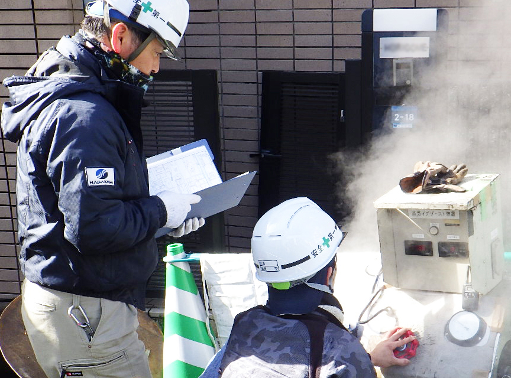
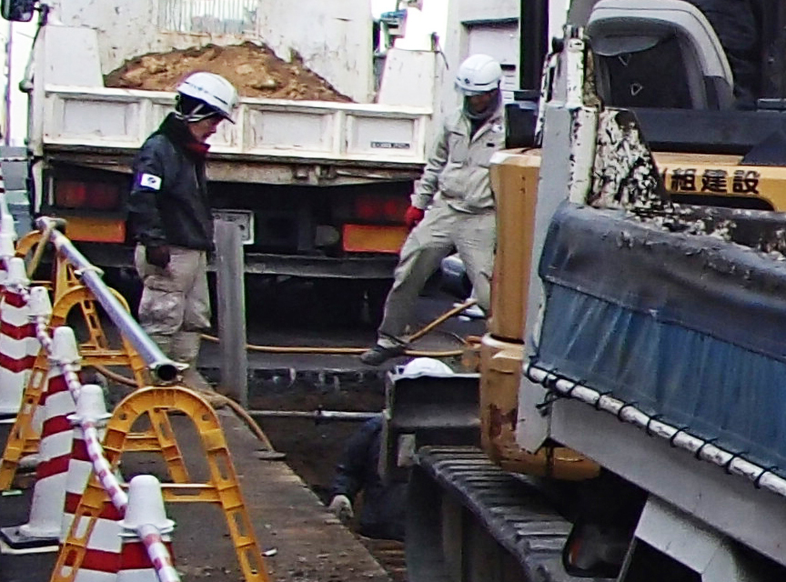
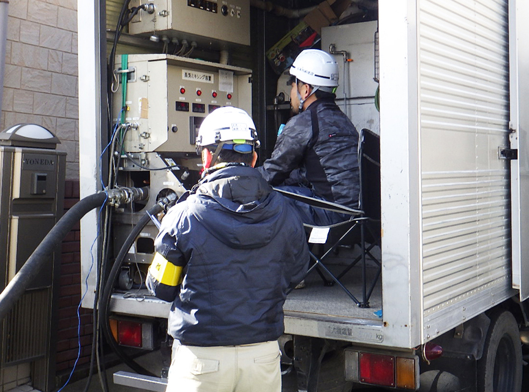
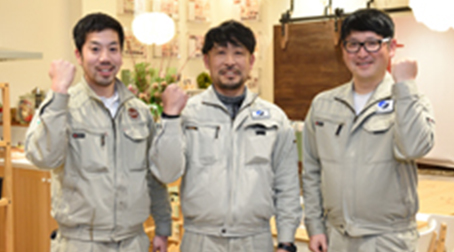

- 50年・100年先の未来を見据えて、
地域の安全・安心を守っています - 現在私は、神戸市全域で行われている上下水道工事の施工管理を担当しています。神戸市の下水管は老朽化が進んでおり、この先、下水管4,000kmのうち約50％が50年以上経過するといわれています。古くなった下水管をそのままにしておくと、割れたりヒビが入ったりして下水管の中に土が入り、空洞化した地面が陥没してしまう恐れもあります。そのため、神戸市では下水管の再整備にとても力を入れており、上下水道工事のプロである私たち、永川組建設が果たす役割もこれからますます大きくなっていくと考えられます。
最先端の無開削工法で
環境に配慮した施工を推進
神戸市の上下水道整備をはじめ須磨水族館や北野坂の舗装工事など神戸エリアに根ざして街づくりに貢献している永川組建設。
今回は３名の先輩に、
それぞれのやりがいについて語ってもらいました。

施工管理としての私の仕事は、工事の工程管理や予算管理などに加えて、地域住民の方々との調整業務などがあります。当社では、地面に穴を掘ることなく下水管を再生する"無開削工法"を導入し、騒音や振動などのリスクが少ない工事を行っています。とはいえ、工事用車両が道を塞いでしまうなど、ご迷惑をおかけすることも少なくありません。そこで、事前に自治会や区民会を対象に説明会を行うなどして、工事にご理解いただくよう努めています。それがきっかけで地域住民の方が私たちの下水道再生工事に興味を持たれ、工事が終わった後に「ありがとう」とお礼を言っていただくことも少なくありません。私たちはみんな、この先50年・100年と続いていく神戸の街を守りたい、という思いで取り組んでいるので、やはり地域の方にそう言っていただけると嬉しいですし、やりがいを感じますね。
永川組建設は土木工事からスタートしましたが、この１０年でリフォームや不動産などにも事業領域を広げ、社員数も２倍以上に増えています。今後もさらに事業拡大を進めながら、街づくりを通して地域に貢献していくことでしょう。社内は若い熱意ある社員が多く、みんなで一丸となって神戸の未来のために頑張っています。これから入ってくる後輩にも、ぜひ街づくりの楽しさを知ってもらいたいですね。

私たちの仕事は、道路や建物のように目に見えるものを作っているわけではないので、一般の人には理解されにくいのですが、実はとても責任重大。万が一、不具合を見落としてそのままにしてしまうと、後々に地面の陥没など大きな事故につながりかねないからです。カメラを通して下水管の状態を見極めるのは難しく、慎重な判断が必要です。大変ですが、うまく不具合を発見し、修繕できた時の達成感は格別ですね。見えないところで神戸の街の安心を支えている、そんな誇りとやりがいが、仕事へのモチベーションとなっています。
永川組建設は、上下水道工事の実績は豊富ですが、管更生工事に関してはまだスタートしたばかり。今後もさらに多くの案件をこなして、神戸市内で管更生といえば永川組建設と言われるくらいの存在になりたいですね。そのためにはこれから入社する新しい方の活躍に大いに期待を寄せています。特に無開削工法は、精密機械を操作する特殊な工事なので、機械やパソコンに強い人に向いていると思います。従来の土木工事のイメージを覆す、活気的な工法で、一緒に業界トップを目指しましょう！

入社後は住宅事業部に配属。３ヶ月間の研修期間を経て、現在は先輩の指導のもと、戸建住宅やマンション、お店など、様々な建物の内装リフォームやリノベーション工事の施工・施工管理に携わっています。最初の頃はわからないことだらけで、先輩や職人さんの話を理解するだけで精一杯だったのですが、今では専門用語や工具の種類、建築材料や建物の構造の知識なども身につき、よりいっそう建物への興味が強くなりましたね。
これまでで最も印象に残っているのは、当社のリフォームブランド「Refa（リーファ）」のショールームを作った時のこと。建具の取り付けや色塗りなども、全て自分たちが手作業で行ったので、完成したときの感動はひとしおでした。また、建物を一から作っていく工程を経験したことで、多くのことを学びました。
社内は全体的に若く、私と年齢の近い20代30代の先輩も活躍しています。また、上下関係も厳しくなく、わからないことも気軽に質問できるので、未経験で入社した私も不安なく取り組めています。そして、自分がやりたいと思うことに自由に挑戦させてくれるのも、この会社の良いところ。私はやはり現場が好きなので、これからもいろんなリフォームの現場を経験してスキルを磨いていきたいと思います。当面の目標は、先輩の力を借りなくても一人で現場を仕切れるようになること。そのために、もっとたくさんの場数を踏んで、知識を広げたいです。また、２級建築施工管理技士の資格も取りたいですね。
学生の方へ
永川組建設は、今年で創業18年目になります。これまでも神戸市を中心とする土木工事事業をはじめ、リフォーム、不動産と着実に事業を拡大し、発展を遂げてきました。今後は3年後に売上50億達成、その先に株式上場も視野に入れ、さらなる躍進を目指します。そのためには、当社の次の世代を担ってくれる若い力が欠かせません。今回は、当社にとって新卒第1期生の募集。これから入社する方には、未来の幹部候補生としての成長を期待しています。
社内はとてもアットホームで人間関係も良好です。小さな組織なので、社長と社員の距離が近く、若手でも遠慮なく自分の意見を発信できる機会がたくさんあります。また、教育体制や資格取得サポートが充実しており、文系・理系に関係なく活躍できることも特長です。実際に先輩社員の中にも建築・土木系以外の学科出身者が多く在籍しているので、安心していただきたいですね。

そんな私たちが求めているのは、礼儀や挨拶など社会人としての基本を大切にできる方。そして、人との関係性を大切にできる方です。特に公共工事の場合は官公庁や近隣住民など、いろんな人と接する機会があるため、口下手でも人当たりの良い方であれば活躍できます。大好きな地元・神戸に根ざして、街の未来を守りたいという方なら、きっと大きなやりがいを感じていただけるでしょう。